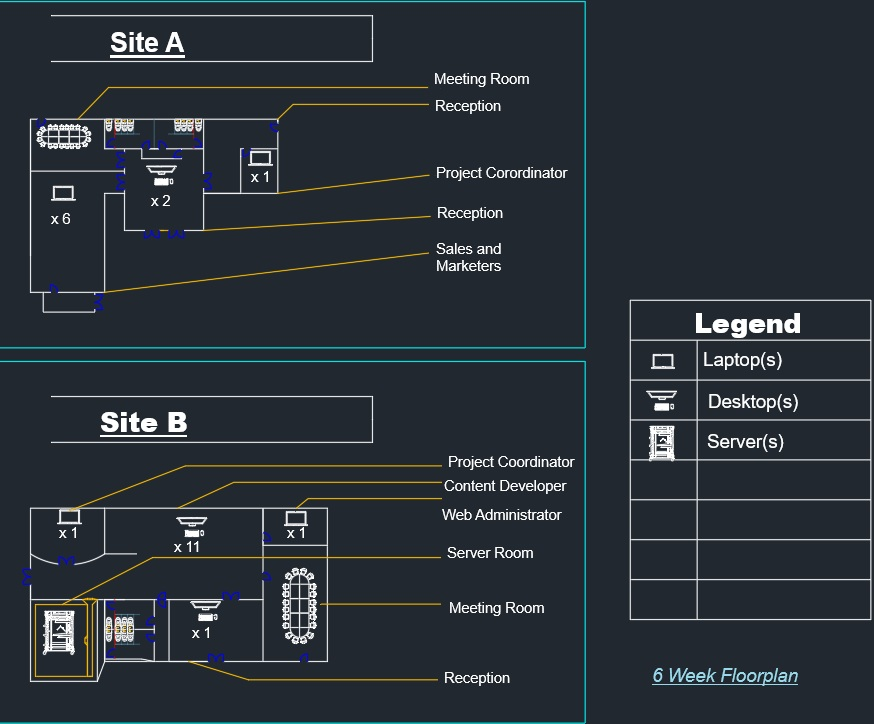
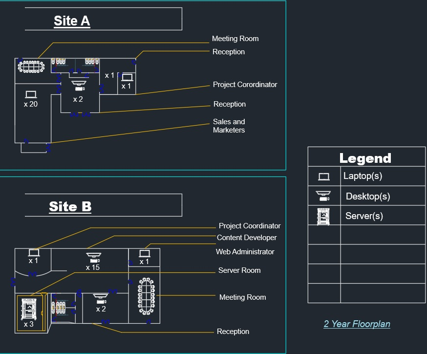

Infrastructure Plan
Games4Learning Floor Plan Overview
G4L [Games for Learning] IT Infrastructure Plan
6-Month Floor Plan

This diagram illustrates the initial six-month phase of G4L [Games for Learning]’s IT infrastructure.
2-Year Floor Plan

The two-year plan shows the projected expansion. It accomodates for the future growth of the institution